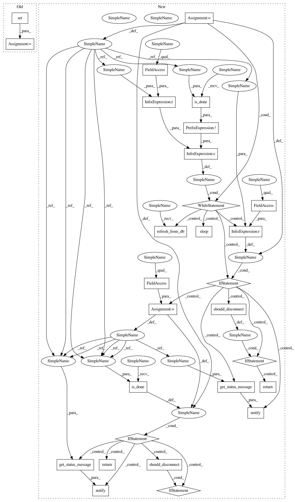

7b5b228f15dabcfcd81d601596652d526e9549dd,polyaxon/streams/api.py,,build_logs,#Any#Any#Any#Any#Any#,527
Before Change
num_message_retries += 1
for message in consumer.get_messages():
num_message_retries = 0
disconnected_ws = set()
for _ws in consumer.ws:
try:
await _ws.send(message)
except ConnectionClosed:
After Change
num_message_retries = 0
// Stream phase changes
status = None
while status != JobLifeCycle.RUNNING and not JobLifeCycle.is_done(status):
job.refresh_from_db()
if status != job.last_status:
status = job.last_status
await notify(consumer=consumer, message=get_status_message(status))
if should_disconnect():
return
await asyncio.sleep(SOCKET_SLEEP)
if JobLifeCycle.is_done(status):
await notify(consumer=consumer, message=get_status_message(status))
RedisToStream.remove_job_logs(job_uuid=job_uuid)
return
while True:
num_message_retries += 1
for message in consumer.get_messages():
num_message_retries = 0
await notify(consumer=consumer, message=message)
// After trying a couple of time, we must check the status of the experiment
if num_message_retries > MAX_RETRIES:
job.refresh_from_db()
if job.is_done:
_logger.info("removing all socket because the job `%s` is done", job_uuid)
consumer.ws = set([])
else:
num_message_retries -= CHECK_DELAY
// Just to check if connection closed
if ws._connection_lost: // pylint:disable=protected-access
_logger.info("Quitting logs socket for job uuid %s", job_uuid)
consumer.remove_sockets({ws, })
should_quite = True
if should_disconnect():
should_quite = True
if should_quite:
return
await asyncio.sleep(SOCKET_SLEEP)
In pattern: SUPERPATTERN
Frequency: 3
Non-data size: 28
Instances
Project Name: polyaxon/polyaxon
Commit Name: 7b5b228f15dabcfcd81d601596652d526e9549dd
Time: 2018-08-23
Author: mouradmourafiq@gmail.com
File Name: polyaxon/streams/api.py
Class Name:
Method Name: build_logs
Project Name: polyaxon/polyaxon
Commit Name: cb08eced70972b74bbedc9346f6b789e66c14ac7
Time: 2018-08-23
Author: mouradmourafiq@gmail.com
File Name: polyaxon/streams/api.py
Class Name:
Method Name: experiment_logs
Project Name: polyaxon/polyaxon
Commit Name: 7b5b228f15dabcfcd81d601596652d526e9549dd
Time: 2018-08-23
Author: mouradmourafiq@gmail.com
File Name: polyaxon/streams/api.py
Class Name:
Method Name: job_logs